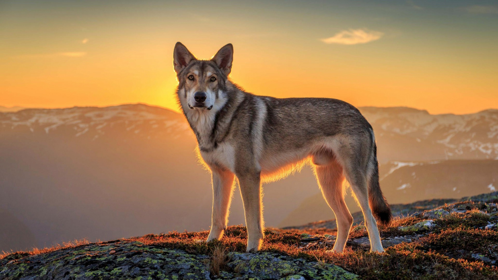
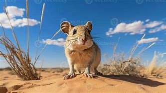

Arctic Fox
Small foxes with white winter coats that provide camouflage. They adapt well to extreme cold.
Penguin
Flightless birds adapted to cold climates, with excellent swimming skills in Antarctica regions.
Seal
Marine mammals that are excellent swimmers. They rest on ice and feed on fish.
Walrus
Large marine mammals with tusks and whiskers. They feed on clams and live in icy waters.
Dolphin
Intelligent and social marine mammals known for their playful behavior and echolocation abilities.
Shark
Predatory fish with streamlined body & sharp teeth. They play a vital role in maintaining oceanic ecosystems.
Turtle
Reptiles with a hard shell for protection, they are found in oceans and freshwater.
Octopus
Invertebrates with eight arms, high intelligence & ability to camouflage in various marine habitats.
Tiger
Apex predator with striking orange & black stripes in dense forests & grasslands, they are solitary hunters.
Deer
Graceful herbivores with antlers (in males), they are known for their agility and speed. They thrive in wooded areas.

Wolf
Social carnivores that live in packs and communicate with howls. They are ancestors of domestic dogs.
Raccoon
Nocturnal mammals with dexterous front paws and a masked face. They are omnivorous & highly adaptable.
Scorpians
Predatory arachnids with venomous stingers at the tail. They are adapted to survive extreme desert climates.

Kangaroo Rat
Small rodents that live in deserts and get moisture from seeds, rarely needing to drink water.
Lizard
Reptiles with scaly skin, commonly seen basking in the sun. Many have tails that regenerate.
Camel
Known as the "ships of the desert," they store fat in their humps and can survive long periods without water.
Cow
Domesticated herbivores that provide milk, meat, and leather. They are important for agriculture.
Goat
Hardy animals raised for milk, meat, and hides. They are excellent climbers and grazers.
Horse
Strong and the fastest animals that are used for transportation, farming, and sports.
Pig
Omnivorous farm animals raised for pork. Known for their intelligence and adaptability.

Gorilla
Large primates with a vegetarian diet, found in African rainforests. They are highly intelligent & social.
Leopard
Agile big cats with spotted coats, known for their stealth with the climbing ability.
Monkey
Primates with prehensile tails, found in jungles and forests. They are known for their social behavior.
Sloth
Slow-moving tree-dwellers with long claws. They spend most of their lives hanging from trees.